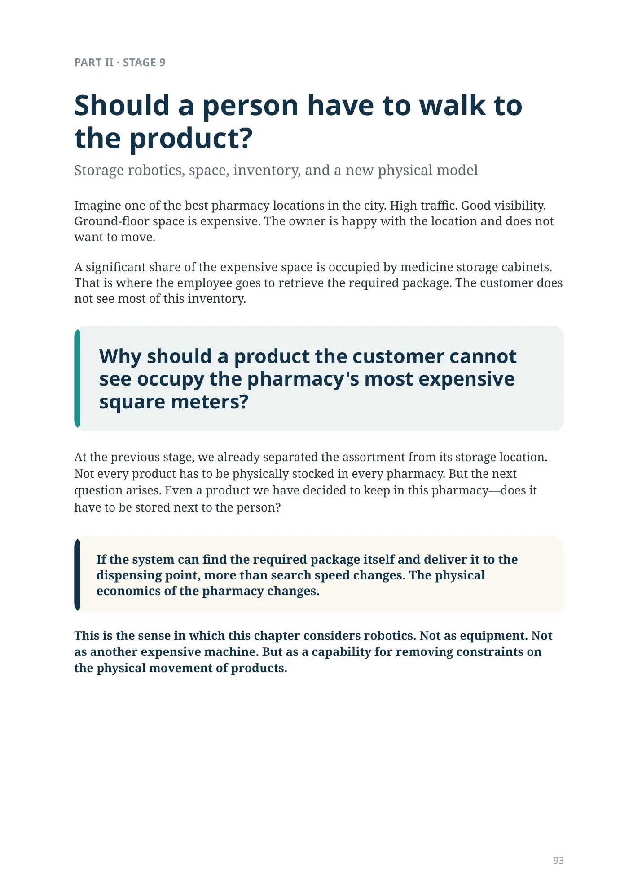
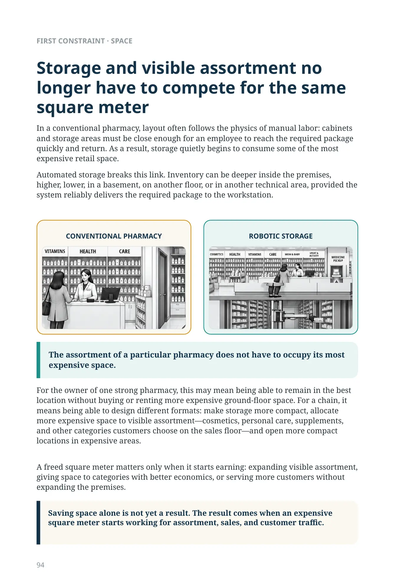
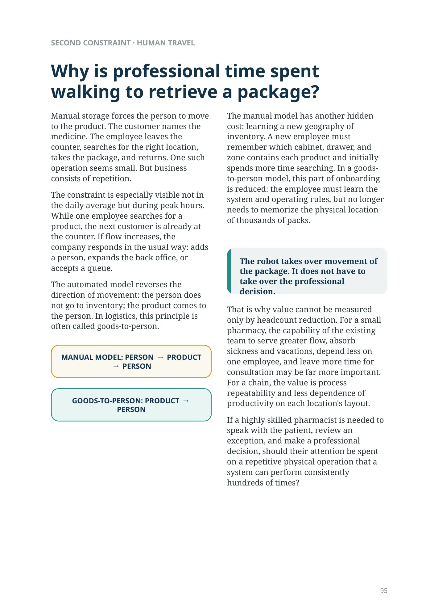
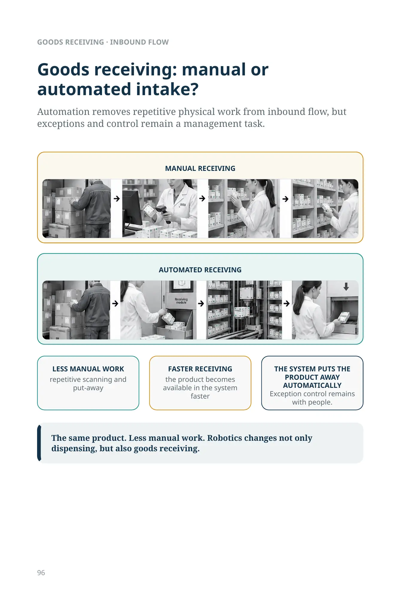
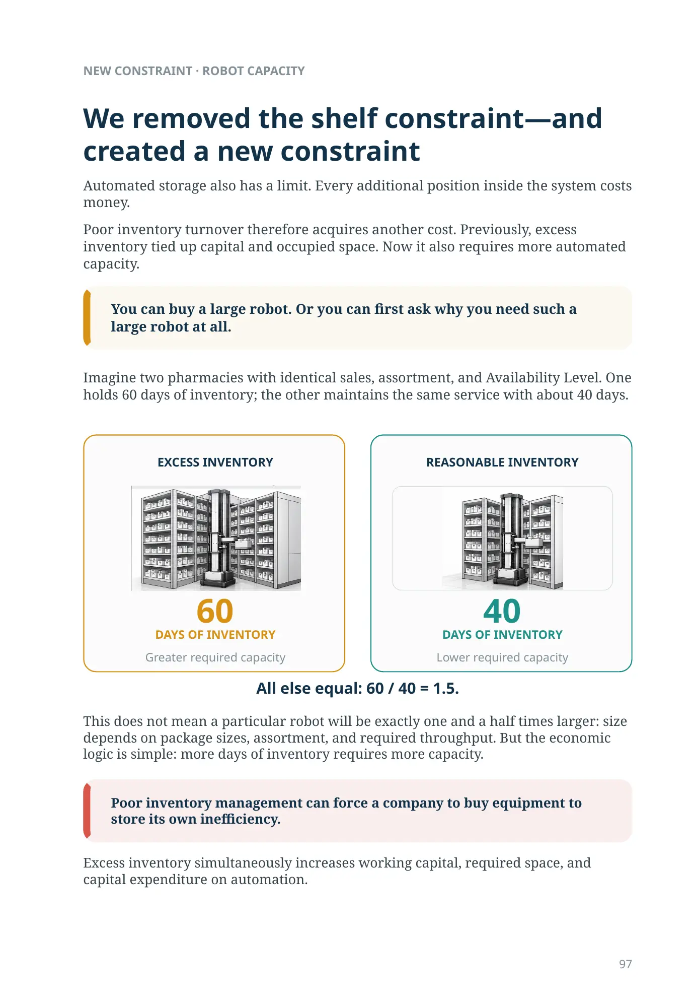
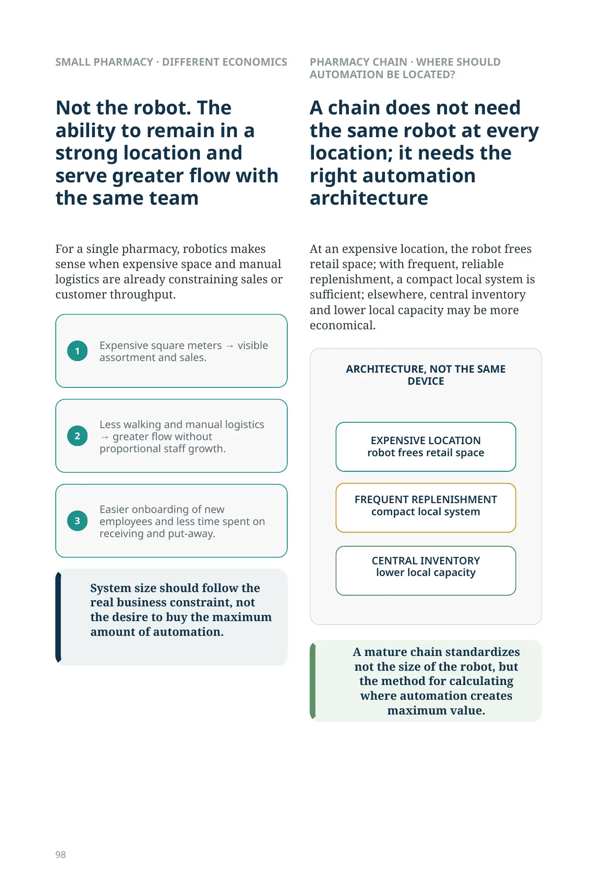
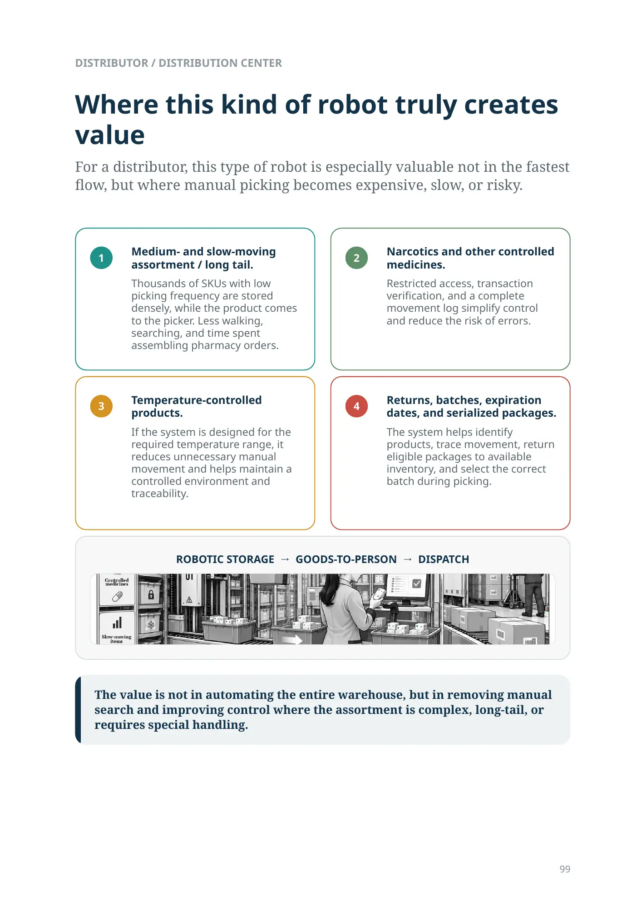
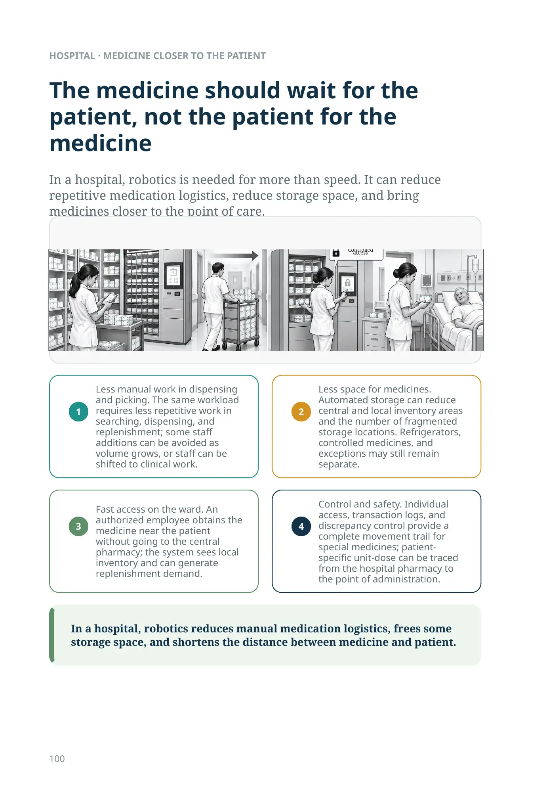
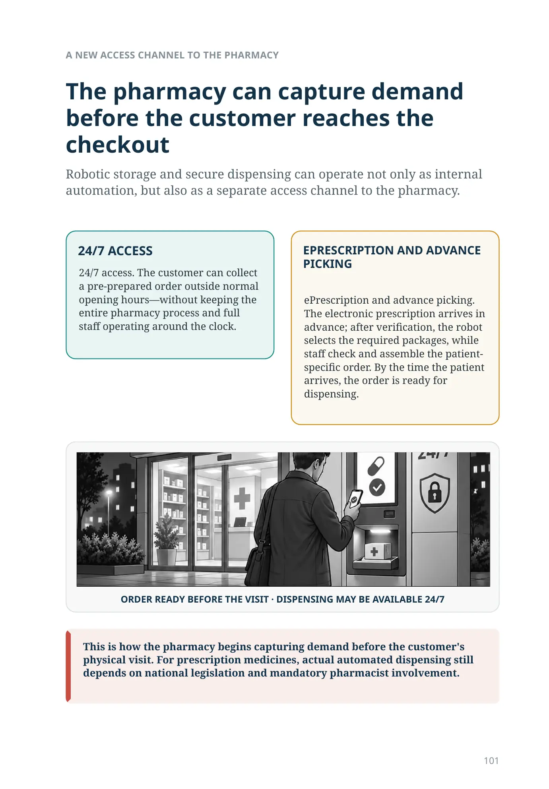
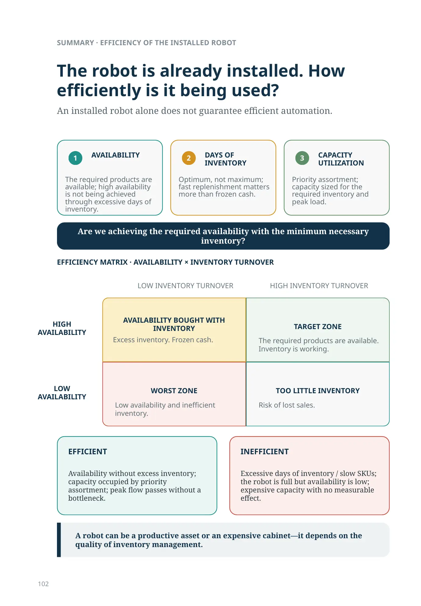
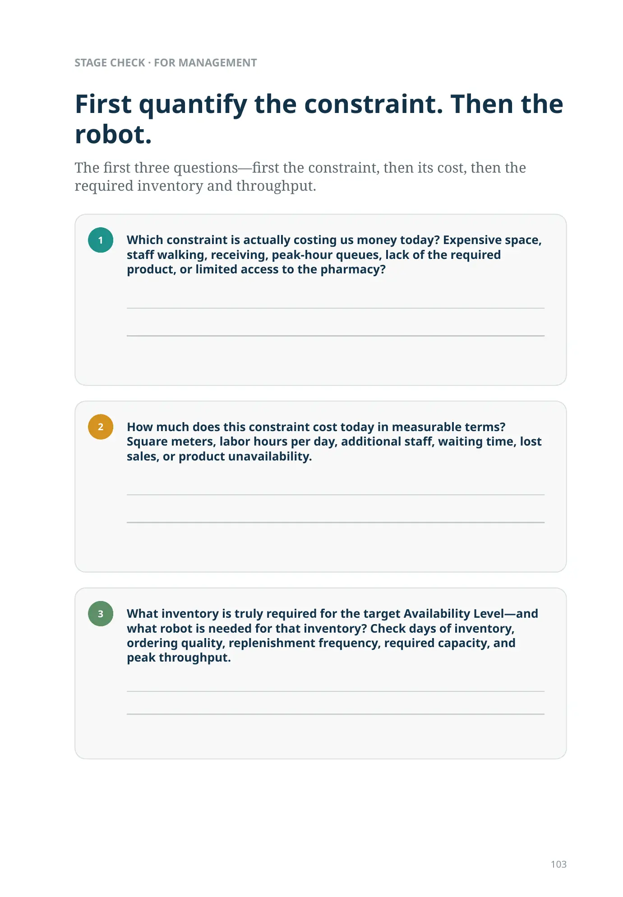
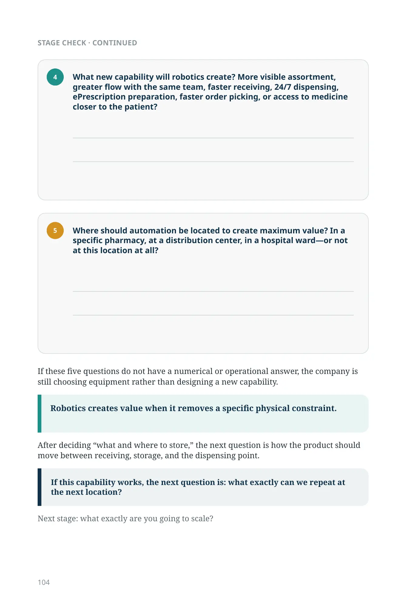
Should a person have to walk to the product?
PART II · STAGE 9
Storage robotics, space, inventory, and a new physical model
Imagine one of the best pharmacy locations in the city. High traffic. Good visibility. Ground-floor space is expensive. The owner is happy with the location and does not want to move.
A significant share of the expensive space is occupied by medicine storage cabinets. That is where the employee goes to retrieve the required package. The customer does not see most of this inventory.
Why should a product the customer cannot see occupy the pharmacy's most expensive square meters?
At the previous stage, we already separated the assortment from its storage location. Not every product has to be physically stocked in every pharmacy. But the next question arises. Even a product we have decided to keep in this pharmacy—does it have to be stored next to the person?
If the system can find the required package itself and deliver it to the dispensing point, more than search speed changes. The physical economics of the pharmacy changes.
This is the sense in which this chapter considers robotics. Not as equipment. Not as another expensive machine. But as a capability for removing constraints on the physical movement of products.
Storage and visible assortment no longer have to compete for the same square meter
In a conventional pharmacy, layout often follows the physics of manual labor: cabinets and storage areas must be close enough for an employee to reach the required package quickly and return. As a result, storage quietly begins to consume some of the most expensive retail space.
Automated storage breaks this link. Inventory can be deeper inside the premises, higher, lower, in a basement, on another floor, or in another technical area, provided the system reliably delivers the required package to the workstation.
The assortment of a particular pharmacy does not have to occupy its most expensive space.
For the owner of one strong pharmacy, this may mean being able to remain in the best location without buying or renting more expensive ground-floor space. For a chain, it means being able to design different formats: make storage more compact, allocate more expensive space to visible assortment—cosmetics, personal care, supplements, and other categories customers choose on the sales floor—and open more compact locations in expensive areas.
A freed square meter matters only when it starts earning: expanding visible assortment, giving space to categories with better economics, or serving more customers without expanding the premises.
Saving space alone is not yet a result. The result comes when an expensive square meter starts working for assortment, sales, and customer traffic.
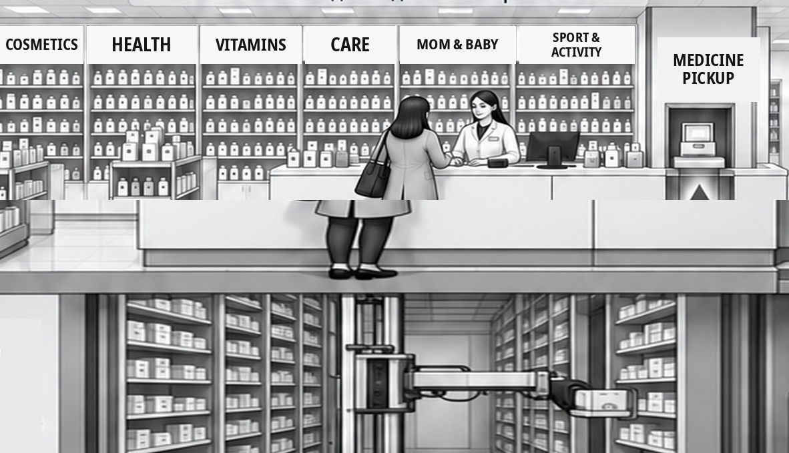
Why is professional time spent walking to retrieve a package?
Manual storage forces the person to move to the product. The customer names the medicine. The employee leaves the counter, searches for the right location, takes the package, and returns. One such operation seems small. But business consists of repetition.
The constraint is especially visible not in the daily average but during peak hours. While one employee searches for a product, the next customer is already at the counter. If flow increases, the company responds in the usual way: adds a person, expands the back office, or accepts a queue.
The automated model reverses the direction of movement: the person does not go to inventory; the product comes to the person. In logistics, this principle is often called goods-to-person.
The manual model has another hidden cost: learning a new geography of inventory. A new employee must remember which cabinet, drawer, and zone contains each product and initially spends more time searching. In a goods-to-person model, this part of onboarding is reduced: the employee must learn the system and operating rules, but no longer needs to memorize the physical location of thousands of packs.
The robot takes over movement of the package. It does not have to take over the professional decision.
That is why value cannot be measured only by headcount reduction. For a small pharmacy, the capability of the existing team to serve greater flow, absorb sickness and vacations, depend less on one employee, and leave more time for consultation may be far more important. For a chain, the value is process repeatability and less dependence of productivity on each location's layout.
If a highly skilled pharmacist is needed to speak with the patient, review an exception, and make a professional decision, should their attention be spent on a repetitive physical operation that a system can perform consistently hundreds of times?
Goods receiving: manual or automated intake?
Automation removes repetitive physical work from inbound flow, but exceptions and control remain a management task.
MANUAL RECEIVING
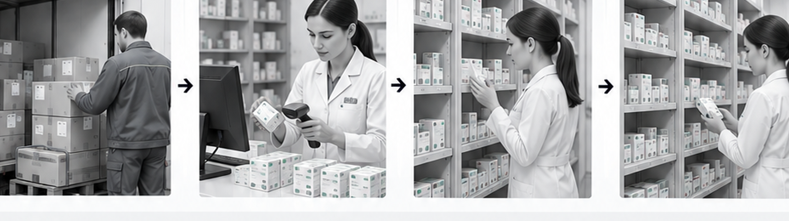
AUTOMATED RECEIVING
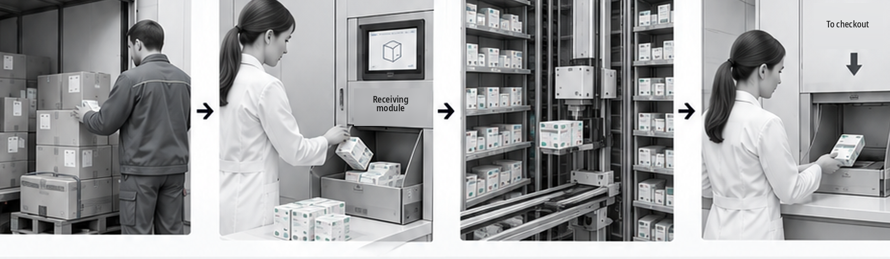
repetitive scanning and put-away
the product becomes available in the system faster
Exception control remains with people.
The same product. Less manual work. Robotics changes not only dispensing, but also goods receiving.
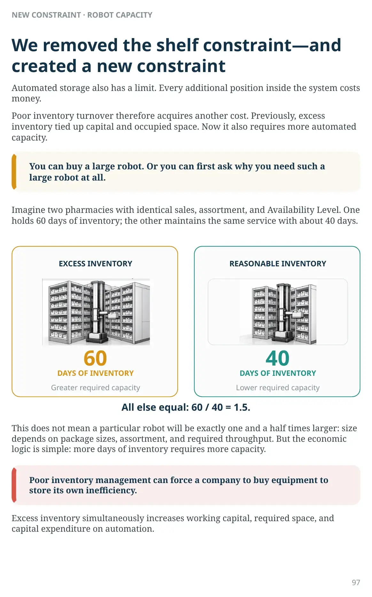
We removed the shelf constraint—and created a new constraint
Automated storage also has a limit. Every additional position inside the system costs money.
Poor inventory turnover therefore acquires another cost. Previously, excess inventory tied up capital and occupied space. Now it also requires more automated capacity.
You can buy a large robot. Or you can first ask why you need such a large robot at all.
Imagine two pharmacies with identical sales, assortment, and Availability Level. One holds 60 days of inventory; the other maintains the same service with about 40 days.
All else equal: 60 / 40 = 1.5.
This does not mean a particular robot will be exactly one and a half times larger: size depends on package sizes, assortment, and required throughput. But the economic logic is simple: more days of inventory requires more capacity.
Poor inventory management can force a company to buy equipment to store its own inefficiency.
Excess inventory simultaneously increases working capital, required space, and capital expenditure on automation.
EXCESS INVENTORY
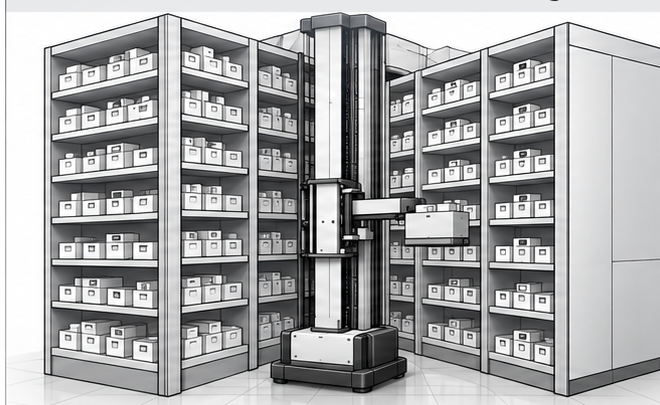
60DAYS OF INVENTORYGreater required capacityREASONABLE INVENTORY
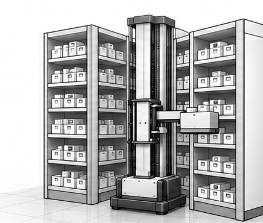
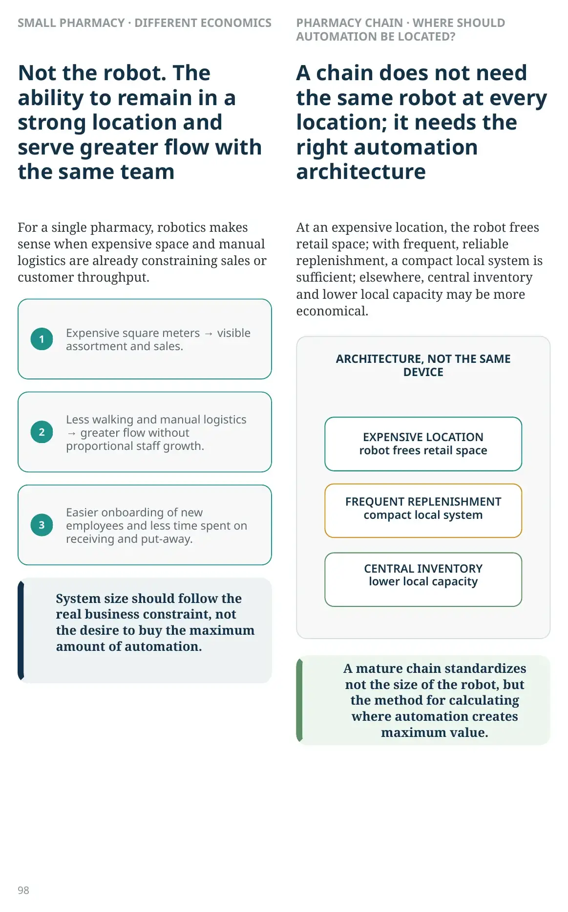
Not the robot. The ability to remain in a strong location and serve greater flow with the same team
For a single pharmacy, robotics makes sense when expensive space and manual logistics are already constraining sales or customer throughput.
- Expensive square meters → visible assortment and sales.
- Less walking and manual logistics → greater flow without proportional staff growth.
- Easier onboarding of new employees and less time spent on receiving and put-away.
System size should follow the real business constraint, not the desire to buy the maximum amount of automation.
A chain does not need the same robot at every location; it needs the right automation architecture
At an expensive location, the robot frees retail space; with frequent, reliable replenishment, a compact local system is sufficient; elsewhere, central inventory and lower local capacity may be more economical.
A mature chain standardizes not the size of the robot, but the method for calculating where automation creates maximum value.
ARCHITECTURE, NOT THE SAME DEVICEEXPENSIVE LOCATION robot frees retail spaceFREQUENT REPLENISHMENT compact local systemCENTRAL INVENTORY lower local capacity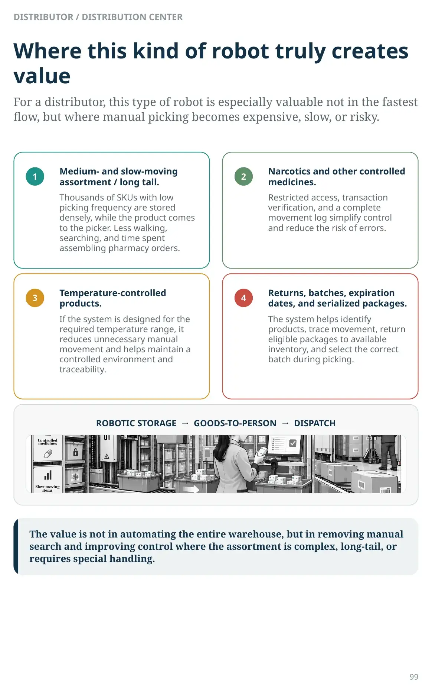
Where this kind of robot truly creates value
For a distributor, this type of robot is especially valuable not in the fastest flow, but where manual picking becomes expensive, slow, or risky.
- Medium- and slow-moving assortment / long tail.Thousands of SKUs with low picking frequency are stored densely, while the product comes to the picker. Less walking, searching, and time spent assembling pharmacy orders.
- Temperature-controlled products.If the system is designed for the required temperature range, it reduces unnecessary manual movement and helps maintain a controlled environment and traceability.
- Narcotics and other controlled medicines.Restricted access, transaction verification, and a complete movement log simplify control and reduce the risk of errors.
- Returns, batches, expiration dates, and serialized packages.The system helps identify products, trace movement, return eligible packages to available inventory, and select the correct batch during picking.
The value is not in automating the entire warehouse, but in removing manual search and improving control where the assortment is complex, long-tail, or requires special handling.
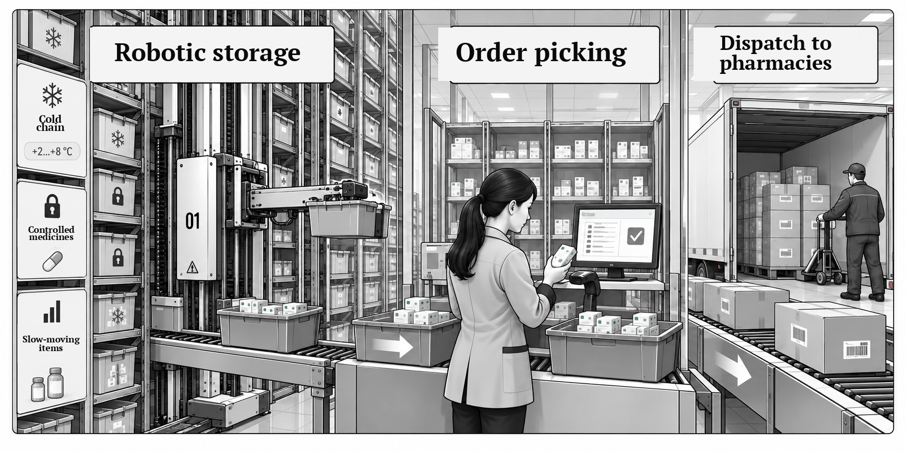
The medicine should wait for the patient, not the patient for the medicine
In a hospital, robotics is needed for more than speed. It can reduce repetitive medication logistics, reduce storage space, and bring medicines closer to the point of care.
- Less manual work in dispensing and picking. The same workload requires less repetitive work in searching, dispensing, and replenishment; some staff additions can be avoided as volume grows, or staff can be shifted to clinical work.
- Less space for medicines. Automated storage can reduce central and local inventory areas and the number of fragmented storage locations. Refrigerators, controlled medicines, and exceptions may still remain separate.
- Fast access on the ward. An authorized employee obtains the medicine near the patient without going to the central pharmacy; the system sees local inventory and can generate replenishment demand.
- Control and safety. Individual access, transaction logs, and discrepancy control provide a complete movement trail for special medicines; patient-specific unit-dose can be traced from the hospital pharmacy to the point of administration.
In a hospital, robotics reduces manual medication logistics, frees some storage space, and shortens the distance between medicine and patient.
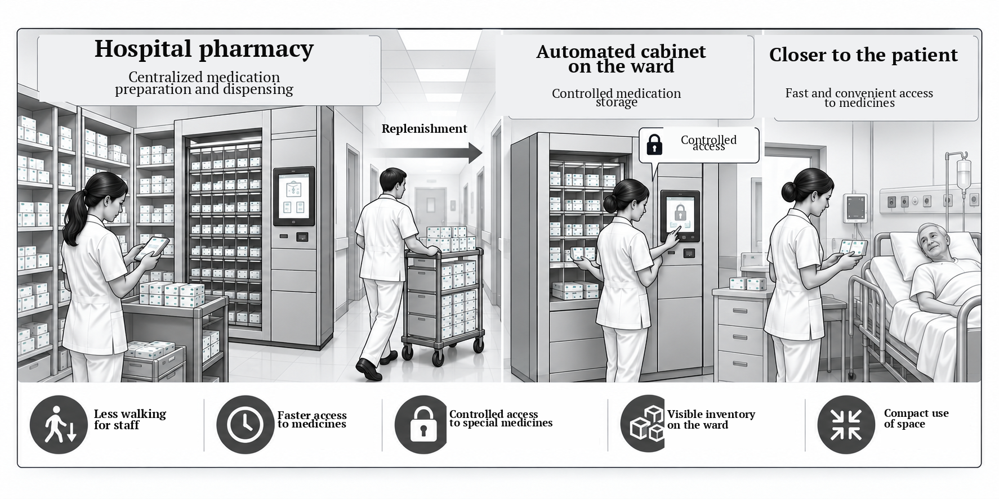
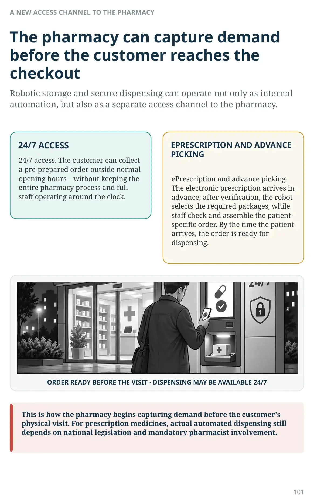
The pharmacy can capture demand before the customer reaches the checkout
Robotic storage and secure dispensing can operate not only as internal automation, but also as a separate access channel to the pharmacy.
- 24/7 access. The customer can collect a pre-prepared order outside normal opening hours—without keeping the entire pharmacy process and full staff operating around the clock.
- ePrescription and advance picking. The electronic prescription arrives in advance; after verification, the robot selects the required packages, while staff check and assemble the patient-specific order. By the time the patient arrives, the order is ready for dispensing.
This is how the pharmacy begins capturing demand before the customer's physical visit. For prescription medicines, actual automated dispensing still depends on national legislation and mandatory pharmacist involvement.
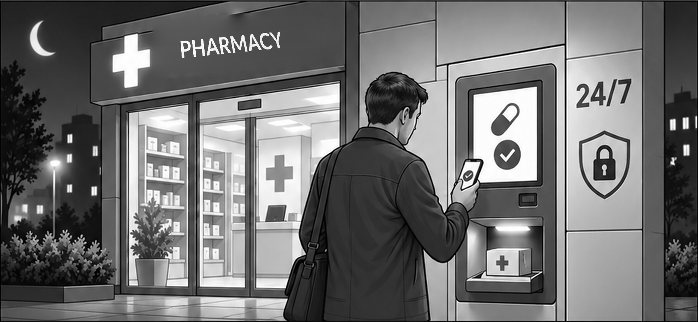
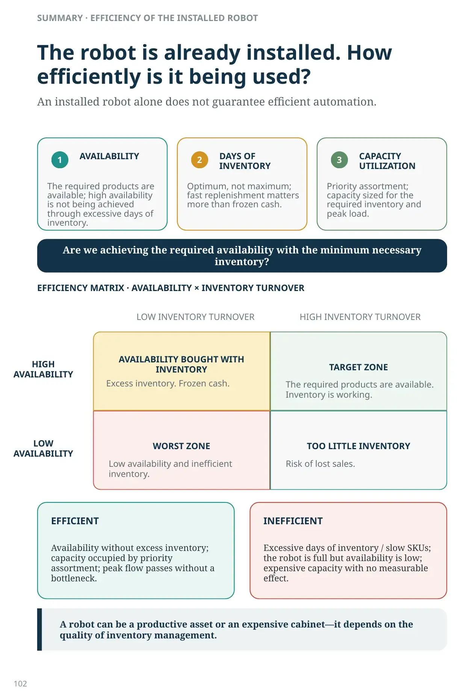
The robot is already installed. How efficiently is it being used?
An installed robot alone does not guarantee efficient automation.
AVAILABILITY
The required products are available; high availability is not being achieved through excessive days of inventory.
DAYS OF INVENTORY
Optimum, not maximum; fast replenishment matters more than frozen cash.
CAPACITY UTILIZATION
Priority assortment; capacity sized for the required inventory and peak load.
Are we achieving the required availability with the minimum necessary inventory?
EFFICIENCY MATRIX · AVAILABILITY × INVENTORY TURNOVER
AVAILABILITY BOUGHT WITH INVENTORY
Excess inventory. Frozen cash.
TARGET ZONE
The required products are available. Inventory is working.
WORST ZONE
Low availability and inefficient inventory.
TOO LITTLE INVENTORY
Risk of lost sales.
EFFICIENT
Availability without excess inventory; capacity occupied by priority assortment; peak flow passes without a bottleneck.
INEFFICIENT
Excessive days of inventory / slow SKUs; the robot is full but availability is low; expensive capacity with no measurable effect.
A robot can be a productive asset or an expensive cabinet—it depends on the quality of inventory management.
First quantify the constraint. Then the robot.
The first three questions—first the constraint, then its cost, then the required inventory and throughput.
- Which constraint is actually costing us money today? Expensive space, staff walking, receiving, peak-hour queues, lack of the required product, or limited access to the pharmacy?
- How much does this constraint cost today in measurable terms? Square meters, labor hours per day, additional staff, waiting time, lost sales, or product unavailability.
- What inventory is truly required for the target Availability Level—and what robot is needed for that inventory? Check days of inventory, ordering quality, replenishment frequency, required capacity, and peak throughput.
- What new capability will robotics create? More visible assortment, greater flow with the same team, faster receiving, 24/7 dispensing, ePrescription preparation, faster order picking, or access to medicine closer to the patient?
- Where should automation be located to create maximum value? In a specific pharmacy, at a distribution center, in a hospital ward—or not at this location at all?
If these five questions do not have a numerical or operational answer, the company is still choosing equipment rather than designing a new capability.
Robotics creates value when it removes a specific physical constraint.
After deciding “what and where to store,” the next question is how the product should move between receiving, storage, and the dispensing point.